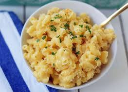

Nice Burger
Baked Mac and Cheese Recipe

Ingredients
- 1 pound elbow macaroni
- 4 tablespoons butter
- 4 tablespoons all-purpose flour
- 3 cups whole milk
- 1 teaspoon dry mustard
- 1 teaspoon salt
- 1/2 teaspoon black pepper
- 8 ounces grated cheddar cheese
- 8 ounces grated Monterey Jack cheese
- 1 cup panko breadcrumbs
- 2 tablespoons melted butter
Instructions
- Preheat oven to 375°F. Grease a 9x13 inch baking dish.
- Cook macaroni according to package directions. Drain and set aside.
- In a large saucepan, melt butter over medium heat. Whisk in flour and cook for 1 minute.
- Gradually whisk in milk, dry mustard, salt, and pepper. Cook, whisking constantly, until mixture comes to a boil and thickens, about 5 minutes.
- Remove from heat and stir in grated cheddar cheese and Monterey Jack cheese until melted and smooth.
- Combine macaroni and cheese sauce in the prepared baking dish. In a small bowl, mix together breadcrumbs and melted butter. Sprinkle over the top of the macaroni mixture.
- Bake for 25-30 minutes, or until golden brown and bubbly. Serve hot.